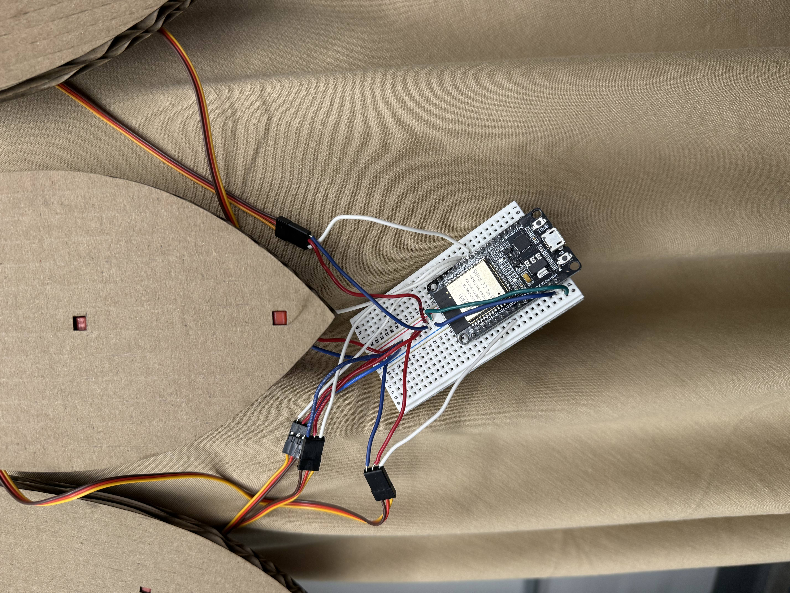
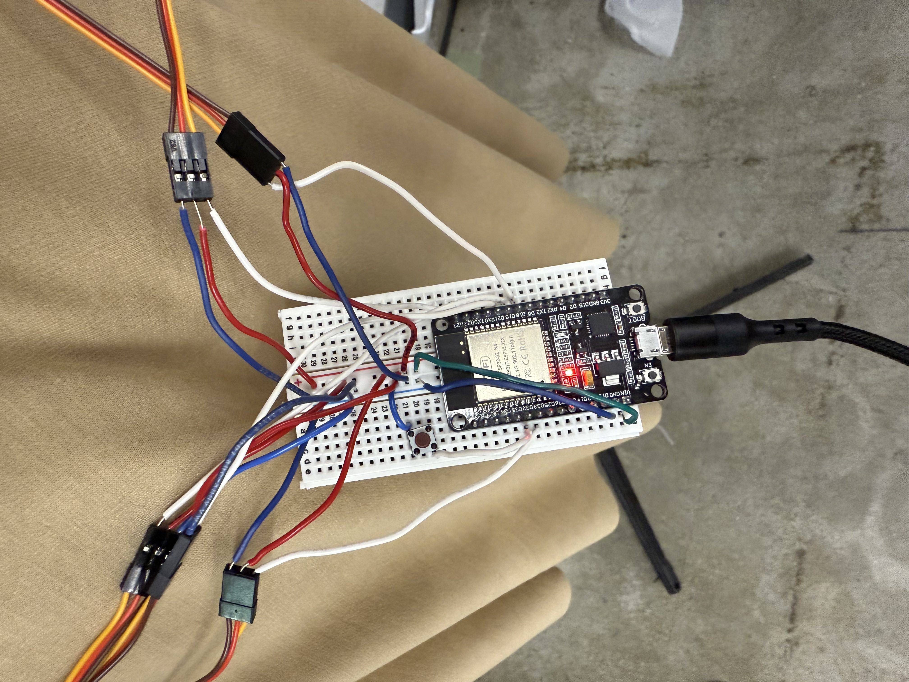
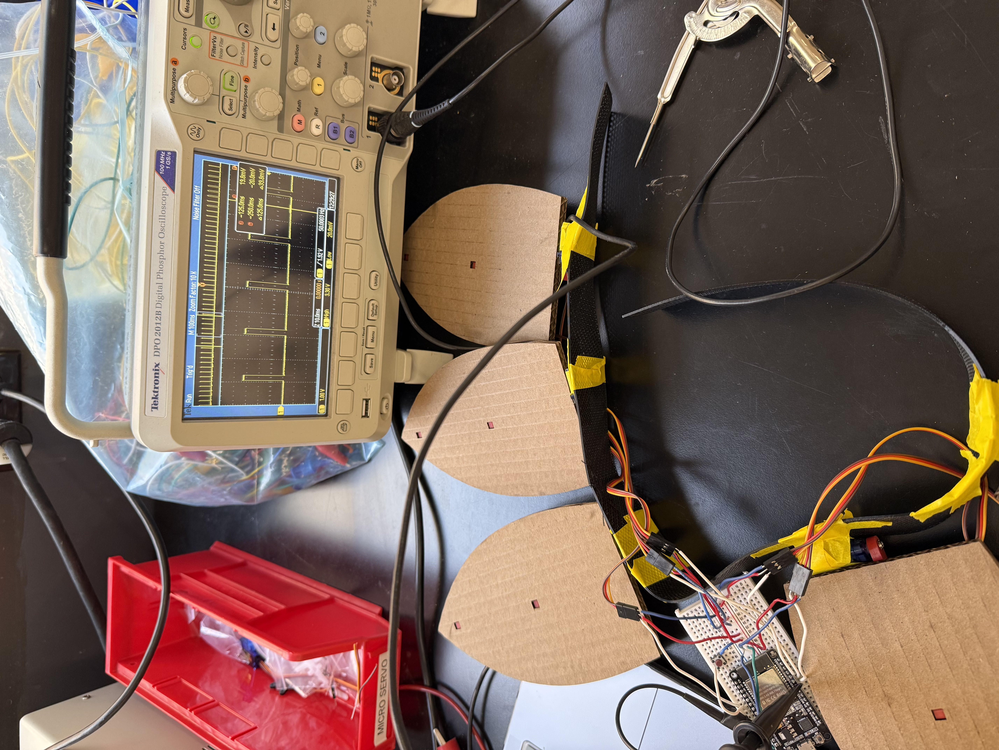
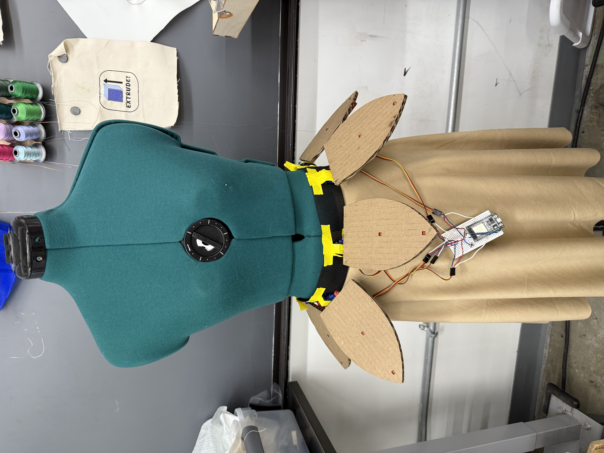

<div class="textcontainer">
<p class="margin"> </p>
<h3>week 7: electronic outputs</h3>
<h4>assignment: minimum viable product for final project</h4>
<p>
for this week, i continued working on my final project. i've implemented the servo control system that allows the flower petals to open and close in response to a button press.
</p>
<h4>final implementation</h4>
<p>
here's the final implementation of my interactive flower with servo-controlled petals. i first created a version that moves automatically, then added button control for user interaction.
</p>
<div class="flexrow">
<div style="width:45%; margin:10px;">
<video width="100%" height="auto" controls>
<source src="final.MOV" type="video/mp4">
your browser does not support HTML5 video.
</video>
<p class="caption">moving flower without button</p>
</div>
<div style="width:45%; margin:10px;">
<video width="100%" height="auto" controls>
<source src="final2.MOV" type="video/mp4">
your browser does not support HTML5 video.
</video>
<p class="caption">moving flower with button</p>
</div>
</div>
<p>
the left video shows the flower in continuous motion without requiring button input. the right video demonstrates the interactive version where pressing the button toggles the movement state, allowing the user to control when the flower opens and closes.
</p>
<h4>setup</h4>
<p>
i began by setting up the basic circuit with an esp32 microcontroller to control the servo motors.
the initial setup included connections for five servo motors (one for each petal) to the esp32. each servo controls the movement of a single petal.
i then added a button to allow user interaction with the flower. the button toggles the movement state of all petals simultaneously.
</p>
<div class="flexrow">
<div style="width:45%; margin:10px;">

<p class="caption">initial circuit board setup with esp32 and servo connections</p>
</div>
<div style="width:45%; margin:10px;">

<p class="caption">circuit board with button integration for user interaction</p>
</div>
</div>
<h4>testing individual components</h4>
<p>
before assembling the complete flower, i tested each component individually to ensure proper functionality. i tested around with different degrees and orientation of the servo motors to find the optimal positions for opening and closing the petals.
</p>
<div class="flexrow">
<div style="width:30%; margin:10px;">
<video width="100%" height="auto" controls>
<source src="one_petal.MOV" type="video/mp4">
your browser does not support HTML5 video.
</video>
<p class="caption">testing a single petal</p>
</div>
<div style="width:30%; margin:10px;">
<video width="100%" height="auto" controls>
<source src="two_petals.MOV" type="video/mp4">
your browser does not support HTML5 video.
</video>
<p class="caption">two petals synchronized</p>
</div>
<div style="width:30%; margin:10px;">
<video width="100%" height="auto" controls>
<source src="all_petals.MOV" type="video/mp4">
your browser does not support HTML5 video.
</video>
<p class="caption">all petals working together</p>
</div>
</div>
<p>
an issue i thought might come up was with the esp32 not having enough power to drive all 5 servo petals simultaneously. i was concerned about voltage drops or erratic movement when all servos were operating at once. to address this, i tested the servos one by one, gradually adding more to the circuit to observe the performance. surprisingly, the esp32 handled the load well, and all five servos operated smoothly without any noticeable power issues.
</p>
<h4>oscilloscope</h4>
<div class="center-row">
<div style="width:60%; margin:10px;">

<p class="caption">signal analysis for servo control</p>
</div>
</div>
<p>
i used an oscilloscope to see how the servos operate on a fixed clock cycle.
the oscilloscope readings show consistent timing between
pulses, which is shown be the repeated pattern of the signal.
</p>
<h4>final assembly</h4>
<p>
after testing all components individually, i assembled the complete flower with all five petals. the final assembly includes the servo motors, the esp32 controller, and the button interface.
</p>
<div class="flexrow">
<div style="width:60%; margin:10px;">

<p class="caption">fully assembled flower petals</p>
</div>
</div>
<p>
each petal was attached with tape first to ensure proper movement range.
this will later be sewn on. after confirming the power was sufficient, i attached the belt onto the model to complete the mechanical assembly.
</p>
<h4>conclusion</h4>
<p>
the electronic outputs component of my project is now working successfully. the servo motors respond to button input and create a smooth opening and closing motion for the flower petals.
next steps include refining the mechanical aspects and working on the actual dress itself.
</p>
<h4>code implementation</h4>
<p>here's the arduino code that controls the servo motors for the flower petals:</p>
<div class="code-block">#include <ESP32Servo.h>
const int openPos = 125; // open petal angle
const int closedPos = 180; // closed petal angle
const unsigned long moveInterval = 10; // ms between steps
const unsigned long pauseDuration = 1000; // ms pause at each end
const int buttonPin = 32;
bool isMoving = false;
class PetalServo {
public:
Servo servo;
int pos;
int step;
unsigned long lastMoveTime;
unsigned long lastPauseTime;
bool paused;
PetalServo(int pin)
: pos(closedPos),
step(-1),
lastMoveTime(0),
lastPauseTime(0),
paused(false)
{
servo.attach(pin);
servo.write(pos);
}
void update(boolean isMoving) {
if (!isMoving) return;
unsigned long now = millis();
// Handle pause state
if (paused) {
if (now - lastPauseTime >= pauseDuration) {
paused = false; // resume movement
}
return;
}
// Step movement
if (now - lastMoveTime >= moveInterval) {
pos += step;
servo.write(pos);
lastMoveTime = now;
// Reverse at the limits
if (pos <= openPos || pos >= closedPos) {
step = -step;
paused = true;
lastPauseTime = now;
}
}
}
};
PetalServo petal1(18);
PetalServo petal2(19);
PetalServo petal3(21);
PetalServo petal4(23);
PetalServo petal5(33);
void setup() {
pinMode(buttonPin, INPUT_PULLUP);
}
void loop() {
static bool lastButton = HIGH;
bool current = digitalRead(buttonPin);
if (current == LOW && lastButton == HIGH) {
isMoving = !isMoving;
delay(50);
}
lastButton = current;
petal1.update(isMoving);
petal2.update(isMoving);
petal3.update(isMoving);
petal4.update(isMoving);
petal5.update(isMoving);
}</div>
</div>